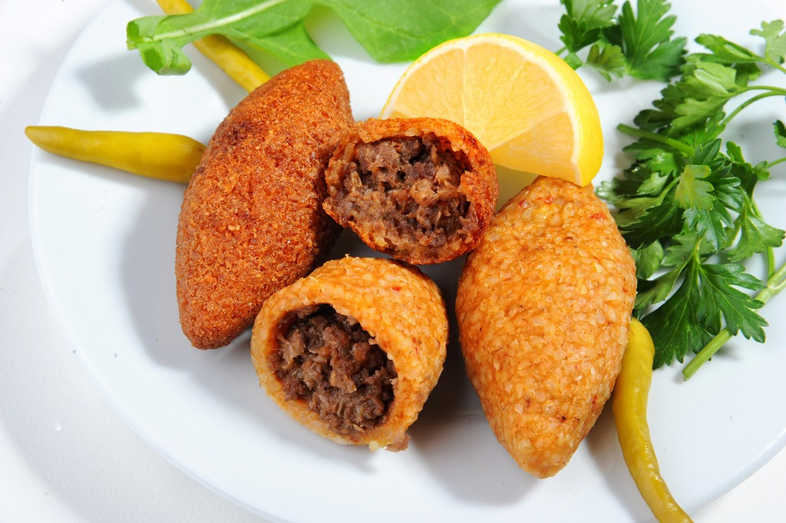
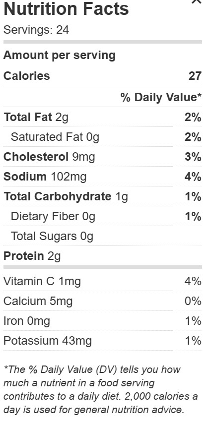

Içli Köfte recipe
Introduction
The food i will be making is a traditional Turkish dish, that is enjoyed by people around the world. I chose this recipe because it's tasty, i haven't had it in a long time, and it represents my culture.

Ingredients
For the Filling:
- ¼ pound ground beef
- 1 small onion, finely chopped
- ⅓ cup walnut halves, or shelled pistachios, ground
- ½ teaspoon salt
- ½ teaspoon freshly ground black pepper
- ½ teaspoon paprika
- ½ teaspoon hot red pepper flakes
For the Case:
- ⅓ cup fine bulgur
- 1 tablespoon ground beef
- ½ teaspoon freshly ground black pepper
- ½ teaspoon salt
- ¼ cup boiled mashed potato
- ½ large egg, beaten
- 1 small onion, grated
- 3 to 4 cups sunflower oil, or other light oil for frying
- Fresh Italian parsley, for garnish
Cooking steps
Make the Filling
- In a small skillet, fry 1/4 pound ground beef until just cooked. Add the onion and continue to stir until the onion softens.
- Add the ground nuts, salt, black pepper, paprika, and hot red pepper flakes and continue to sauté. When all the flavors have combined, remove the pan from the heat and let it rest.
Make the Case
- In a large mixing bowl, combine the bulgur, ground beef, black pepper, salt, potato, egg, and onion. Knead together for several minutes to form a dough.
- Break off walnut-size pieces of the dough and roll them into balls.
- With your index finger, push some of the meat and nut filling into the center of the dough and close the end. Shape the meatballs to be narrower at the ends and thicker in the middle in a kind of spindle or football shape.
- In a large skillet, heat a generous amount of sunflower oil. Fry the meatballs evenly on all sides until dark golden-brown. Place on paper towels to drain.
- Serve piping hot. Garnish with fresh Italian parsley and serve with a dipping sauce of plain yogurt mixed with grated cucumber and fresh dill.
Enjoy!
Nutritional Facts

Source for the recipe: https://www.thespruceeats.com/turkish-filled-meatballs-3274329